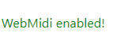
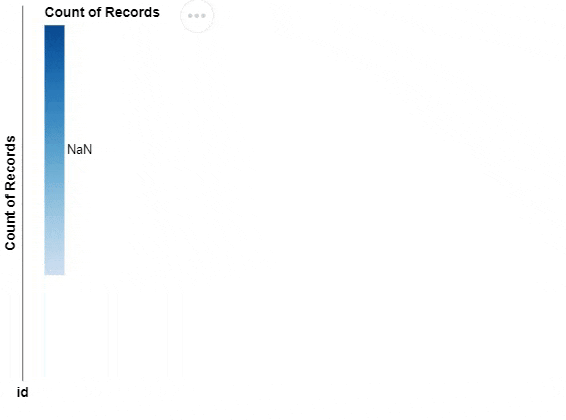

import altair as alt
import pandas as pd
import anywidget
import traitletsI came to realise that playing a piano is a great example of streaming data. And since there is currently much activity around the JupyterChart object within Vega-Altair. Let’s see how far we can bring this combination into practice.
Lets start with a video of the final result
Whoop! Whoop. It actually works. Lets break down what we see in the video.
- We see a piano and a laptop.
- Once I start playing the piano a histogram appears and updates.
The digital piano (kawai CA78) is connected with the laptop using an USB cable that streams musical information using the MIDI protocol.
The laptop presents a notebook within a JupyterLab environment. Within the notebook the video starts with an empty Vega-Altair bar chart. The chart is set-up to listen to the incoming stream of the musical information by the piano and once I start touching notes a histogram appears.
On the x-encoding channel we see all touched independent notes and on both the y-encoding channel and color-encoding channel we see the count() of the touched notes. This type of histogram is also known as a pianogram.
How does it work
The basis of the code is a Jupyter notebook written in Python. We listen to the incoming musical information using WEBMIDI.js. This is a package that performs as a Web MIDI API allowing a web page to interact with MIDI musical instruments. Since WEBMIDI.js is JavaScript we develop a custom Jupyter Widget using the AnyWidget package to make it accessible within our Python code. AnyWidget makes this possible by defining a shared state between JavaScript and Python through traitlets and loading the JavaScript code as an ECMA script module.
AnyMidi is the name of our class that will fuction as a Jupyter Widget:
class AnyMidi(anywidget.AnyWidget):
_esm = "index.js"
enabled = traitlets.Bool(default_value=False).tag(sync=True)
target_name = traitlets.Unicode(default_value=None, allow_none=True).tag(sync=True)
inputs = traitlets.List(allow_none=True).tag(sync=True)
noteon = traitlets.Dict(allow_none=True).tag(sync=True)
noteons = traitlets.List(allow_none=True).tag(sync=True)
anym = AnyMidi()Using the _esm parameter we refer to our JavaScript code as an ECMAScript module. Next, we define multipe traitlets. This are classes that functions as interchange objects between Python and JavaScript.
Once these variables are set within JavaScript, the corresponding variable in Python is updated. And vice-versa, if this variable is changed within Python, the variable is updated in JavaScript.
Once we call anym, it will initiate our Jupyter Widget and executes our JavaScript code. The code will enable the WebMidi.js package and collect information on available inputs.
anym
anym.enabledFalseanym.inputs[]By default it add a listener to the first input device it detects target_name. The listener will update once a note on the musical instrument is played.
anym.target_nameSo if I play a note on the piano, information on of this note is captured and stored in the noteon attribute
anym.noteon{}The noteon attribute only provides information on the last played note, I also have configured another attribute named noteons. This attribute stores the last 100 played notes. This is a list that is empty by initiation and then upon playing the piano growing to a list of 100 elements and after that stays at a length of 100. The new notes are added and the oldest notes are removed using shifting.
anym.noteons[0:3][]Now that we have configured some traitlets that updates once I play the piano we can connect the stream to a JupyterChart class.
We define the following Vega-Altair specification with an empty DataFrame as input source:
df = pd.DataFrame.from_records([])
bar_chart = alt.Chart(df).mark_bar().encode(
x=alt.X('id:N'),
y='count():O',
color='count():O'
)This is a bar chart with on the x-encoding channel the field id, see anym.noteons above and observe that this refers to the field representing the tone identifier of the piano key. The y-encoding channel and color-encoding channel represent the count of the tone played.
As the input DataFrame is still empty the chart will look as follows:
bar_chartAs we like to connect our piano stream to the chart, we need to know the name identifier of our dataset within the Altair specification. We extract the name as follows:
data_name = bar_chart.to_dict()['data']['name']
data_name'data-4f53cda18c2baa0c0354bb5f9a3ecbe5'This is a hashed representation of the dataset upon initiating of the Altair specification. So even if I run the cell of bar_chart again, it will not change the identifier of our dataset within the Altair specification.
To update this dataset within the bar_chart to the piano stream I need to define it as an altair.JupyterChart. This makes it possible to update the chart after it is displayed.
jchart = alt.JupyterChart(bar_chart)Next up is the definition of a function that is called when there is a change observed for the anym.noteons attribute.
So this function is called every time a new piano key is pressed and the tone is added to the list of anym.noteons. The function change_noteons takes the anym.noteons and replaces the data variable defined within the jchart object.
Note
This is currently using a non-public interface, jchart._py_to_js_updates, to update the JupyterChart object.
def change_noteons(change):
df = pd.DataFrame.from_records(anym.noteons)
jchart._py_to_js_updates = [{
"namespace": "data",
"scope": [],
"name": data_name,
"value": df.to_dict("records")
}]
anym.observe(change_noteons, "noteons")Done! Lets visualise our jchart visualisation and observe that the visualisation is updated when playing the piano.
jchart
Awesome. That is fun. Before we continue. I forgot to explain one part. In our AnyMidi class definition is the line _esm = "index.js", this is in fact a referral to a file containing JavaScript code. For a better understanding I also will briefly go through this file. Some elements I will skip.
The file starts with the following
import { WebMidi } from "https://esm.sh/webmidi@3.1.8";This is the import definition of the WebMidi JavaScript package that we use as an API to our connected piano using the MIDI protocol.
The other part that is important is the following:
export async function render({ model, el }) {
...
}This defines a function with two objects. The model object and the el object. The model object makes it possible to store/set JavaScript variables that are approachable within Python using the traitlets objects.
For example the following code collects the different connected MIDI input devices and stores this in a inputsDict constant. Afterward this inputsDict dictionary is set on the inputs trait. We have to explicitly save the changes into model.
const inputsDict = WebMidi.inputs.map(input => ({
name: input.name,
manufacturer: input.manufacturer
}));
model.set("inputs", inputsDict);
model.save_changes();Remember the Python traitlet that synchronizes this data:
inputs = traitlets.List(allow_none=True).tag(sync=True)The following part is an example how the inpterplay between Python and JavaScript happens:
By default, the anym.target_name refers to the first detected name of the available inputs. But if you have multiple MIDI devices conncted you might want to switch the listener to a device of choice (I only have one device connected, so I cannot test if this actually works).
Switching is as simple as:
anym.target_name = 'MY-OTHER-MIDI-DEVICE'We need to listen for changes of the target_name. This is done as follows:
model.on("change:target_name", () => {
console.log('Target name changed');
const newTarget = model.get("target_name") || null;
if (newTarget !== null) {
registerListener(newTarget);
}
});If a change is detected in the target_name the JavaScript code will execute a function. In this function the newTarget is defined by getting the new target_name, through : const newTarget = model.get("target_name") and then a new listener is registered to this newTarget.
If an error occurs in the JavaScript side of things we like to tunnel this back to our Python notebook. We use the el element for this. For example to define an innerHTML property that pipes back the ${error.message}:
const showError = error => {
el.innerHTML = `<div style="color:red;">
<p>JavaScript Error: ${error.message}</p>
<p>See the JavaScript console for the full traceback.</p>
</div>`;
};The full index.js code can be seen by:
Clicking me
import { WebMidi } from "https://esm.sh/webmidi@3.1.8";
let activeInput = null;
export async function render({ model, el }) {
const showError = error => {
el.innerHTML = `<div style="color:red;">
<p>JavaScript Error: ${error.message}</p>
<p>See the JavaScript console for the full traceback.</p>
</div>`;
};
const showSuccess = () => {
el.innerHTML = `<div style="color:green;">
<p>WebMidi enabled!</p>
</div>`;
};
const collectInputsWhenEnabled = async () => {
try {
await WebMidi.enable();
if (WebMidi.enabled) {
console.log("WebMidi is enabled");
console.log(WebMidi);
const inputsDict = WebMidi.inputs.map(input => ({
name: input.name,
manufacturer: input.manufacturer
}));
console.log(inputsDict);
model.set("inputs", inputsDict);
model.save_changes();
console.log("WebMidi input saved in model");
// Set target_name if it's not set already
if (!model.get("target_name")) {
const firstInput = WebMidi.inputs[0];
if (firstInput) {
model.set("target_name", firstInput.name);
model.save_changes();
}
}
} else {
console.log("WebMidi is not yet seen as enabled");
setTimeout(collectInputsWhenEnabled, 1000);
}
} catch (error) {
showError(error);
}
};
const registerListener = newTarget => {
// Remove listener from previous input, if exists
if (activeInput) {
console.log('Removing current active listener');
activeInput.removeListener();
}
activeInput = WebMidi.getInputByName(newTarget);
if (!activeInput) {
console.log('Setting none values');
// If activeInput is undefined, set noteons and noteon to empty or null
model.set("noteons", []);
model.set("noteon", null);
model.save_changes();
return;
}
const noteonsArray = [];
activeInput.addListener("noteon", e => {
const noteonDict = {
id: e.note.identifier,
attack: e.note.attack,
ts: e.timestamp,
name: e.note.name,
octave: e.note.octave,
accidental: btoa(e.note.accidental)
};
console.log(noteonDict);
noteonsArray.push(noteonDict);
while (noteonsArray.length > 100) {
noteonsArray.shift();
}
model.set("noteons", noteonsArray);
model.set("noteon", noteonDict);
model.save_changes();
});
};
try {
await collectInputsWhenEnabled();
model.set("enabled", WebMidi.enabled);
model.save_changes();
showSuccess();
} catch (error) {
showError(error);
}
// Listen for changes to target_name and update the listener accordingly
model.on("change:target_name", () => {
console.log('Target name changed');
const newTarget = model.get("target_name") || null;
if (newTarget !== null) {
registerListener(newTarget);
}
});
// If target_name is already set, register the listener
const newTarget = model.get("target_name") || null;
if (newTarget !== null) {
console.log('Target name already set');
registerListener(newTarget);
}
}Later more!